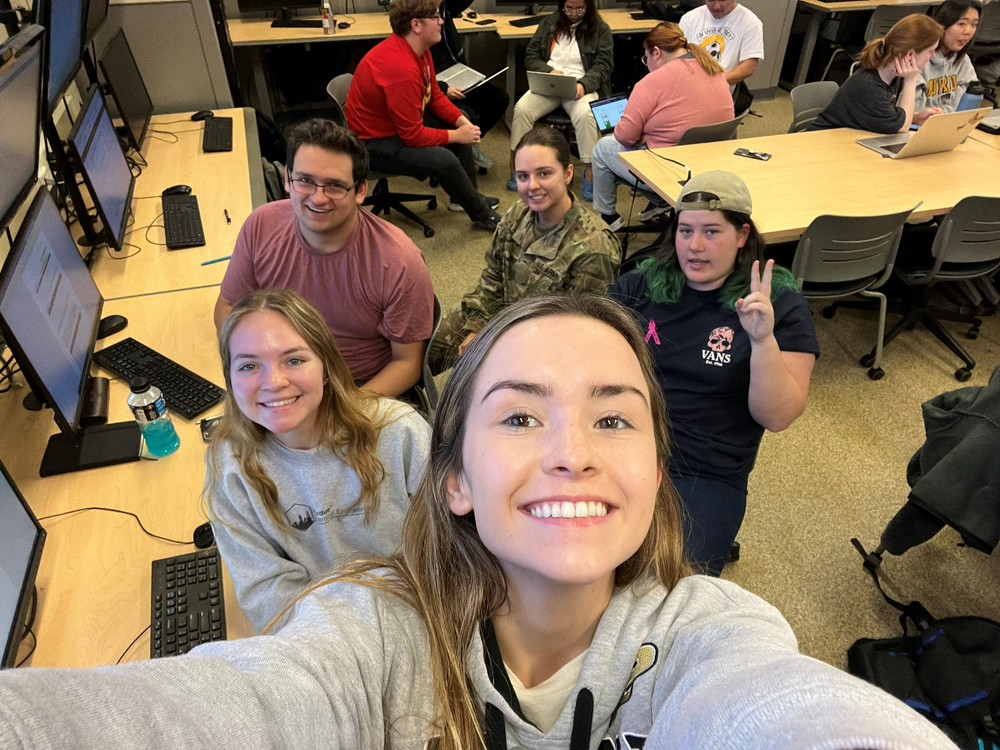
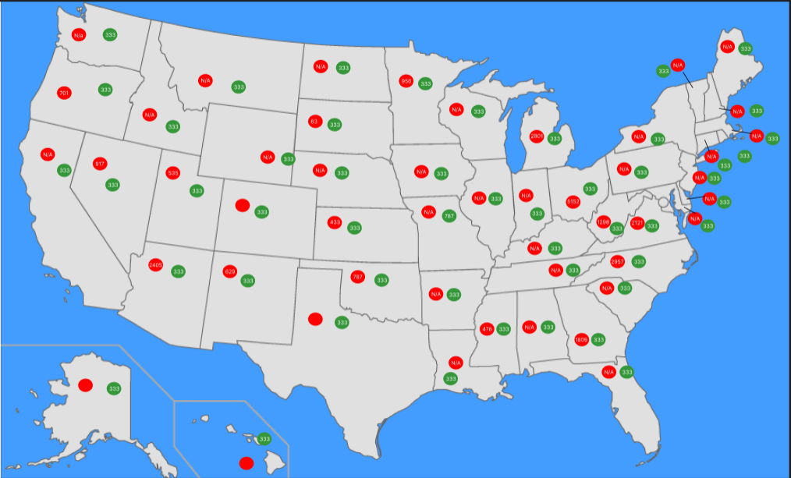
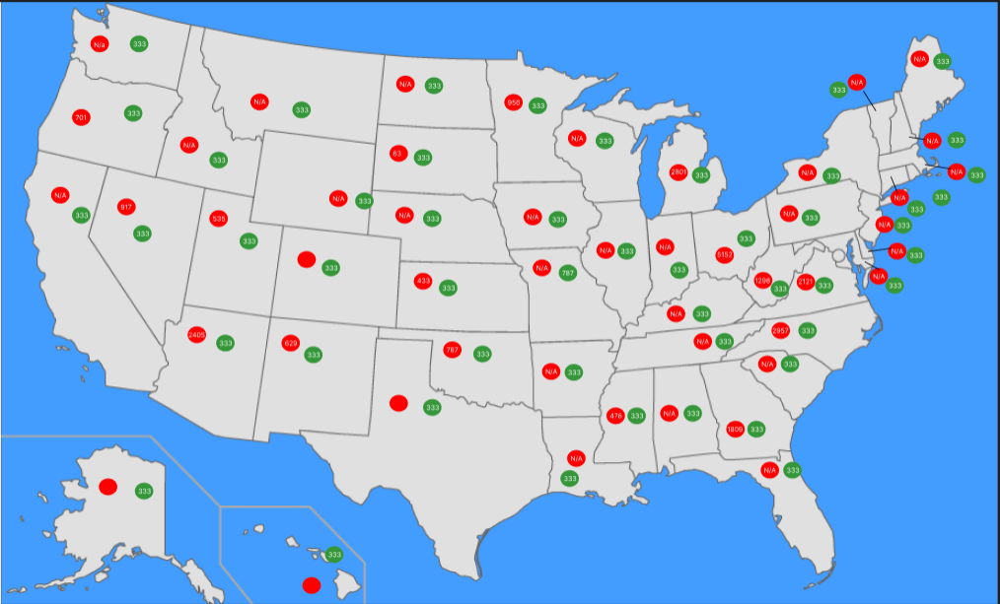

Mediocre at Best
Meet Our Team!
Avery McGinley SO UX Design, Claire O'Malley FR UX Design, Emma Belter FR Web Programming, Gabe Doria SO Animation and Visual Effects, and Madison Newman SR Chemical Engineering
Our topic for this project is the Opioid Epidemic and we will use quantitative reasoning to determine the leading causes of the opioid epidemic and why specific groups are more targeted.
 
